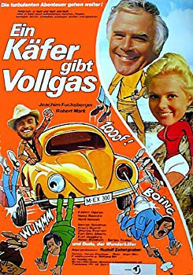

IMDB-Wertung: 5.1 / 10
IMDB-Wertung: 5.1 / 10  Metascore:
Metascore: 
 IMDB-Wertung: 5.1 / 10 Metascore:
Jahr: 1972 Genre: Komödie Regisseur: Rudolf Zehetgruber Drehbuch: Rudolf Zehetgruber Soundtrack: Jürgen Elert Darsteller:
Dauer: 86 Minuten
FSK: 6
Land: West-Deutschland Studio:
Untertitel:
Auflösung: 1080p (1920x1080) Größe: 4884 MB
 Karl-Otto Alberty als Marchese de la Sotta
Karl-Otto Alberty als Marchese de la Sotta
Datei: X:\5-Pentalogie(A-Z)\Dudu - Ein Käfer\Dudu 2 - Ein Käfer gibt Vollgas (1972, FSK6, 1920x1080).mkv seit 25.12.2018
Festplatte: HD Collection-3(N-Z)-6(A-Z)
 Es gibt insgesamt 8 Filme in der Gruppe '5-Pentalogie(A-Z)\Dudu - Ein Käfer'
Es gibt insgesamt 8 Filme in der Gruppe '5-Pentalogie(A-Z)\Dudu - Ein Käfer'